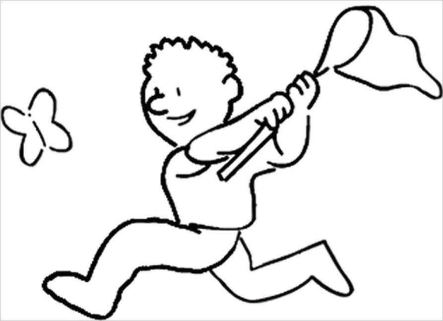

3.5 Bachelor Biologie
ğŸ‰Herzlichen Glückwunsch!🉠Du hast dich für ein Biologie-Studium an der Uni Bayreuth entschieden. Wie du bald merken wirst, war dies die “beste†Entscheidung deines Lebens, bis jetzt!
Nun wollen wir dir zeigen wie du immer nur noch bessere Entscheidungen für dein Leben (= Studium) treffen kannst. Zuallererst gilt es, das nötige Rüstzeug für deinen Kampf durch die Praktika zu besorgen: Sezierbesteck (in der Fachschaft), Kittel (den brauchst du zwar im 1. Semester nicht zwingend, aber in späteren Semestern brauchst du ihn sicher, also hol dir auch den in der Fachschaft) und Schutzbrille (die liegen zwar in jedem Labor aus, aber eine eigene und nicht zerkratzte ist angenehmer; die gibt’s in der Warenausgabe im Keller).
Wie du bei deiner Ankunft in Bayreuth vielleicht am fehlenden Oberleitungsnetz der Bahn erkannt hast, sind einige Teile Bayreuths noch nicht elektrifiziert. 😅 Dies betrifft leider auch einige Lehrstühle an der Uni Bayreuth, weshalb du für die Praktika teilweise auf traditionellere Formen der Anmeldung zurückgreifen musst.
Übrigens:
Für jede Klausur gibt es Anmeldefristen, die meistens eine Woche davor enden (manchmal auch früher!); also immer rechtzeitig um die Anmeldung kümmern!
Die Anmeldung kann über Listen in den Sekretariaten, über eLearning oder über cmlife erfolgen. Du solltest daher kurz vor oder spätestens zu Semesterbeginn regelmäßig die Aushangbretter und entsprechenden Internetseiten checken. Welcome to the Jungle!
Für die Nutzung von cmlife benötigst du dein persönliches Unipasswort. Wie du dieses bekommst sagen wir dir in der Einführungsveranstaltung. Also alle hingehen◠Falls dir dieses jemals abhandenkommen sollte, kannst du dir mit deinem Studierendenausweis ein neues in der Studierendenkanzlei abholen.
Außerdem gibt es für jede Prüfung eine gewisse Anzahl an Leistungspunkten (LP) die dir, wenn du ein Modul bestehst komplett, also unabhängig von der Note, gutgeschrieben werden. Bis zum Ende des dritten Semesters musst du mindestens 40 davon gesammelt haben, ansonsten gilt deine Bachelorprüfung als “nicht bestanden”. Sollte der unwahrscheinliche Fall eintreten, dass du eine Klausur (wie zum Beispiel Sysmo oder OC I) nicht bestehst, kannst du diese immer mindestens einmal wiederholen. Trotzdem ist es natürlich besser die Klausuren sofort zu bestehen – das erspart dir viel Stress und noch dazu ein gutes Stück an Organisationsaufwand.

Selbstverständlich gehört auch Leichenfledderei zum Biologiestudium. Damit darfst du gleich im 1. Semester anfangen, wo du vom Pantoffeltierchen über Regenwurm und Saibling bis hin zur Ratte alles auf deinem Tisch liegen hast.
Zitat für Zwischendurch:
Ihhhh, die Maus fass ich nicht an!!!
Biologie- Studentin
Einen vergleichbaren Kurs gibt es übrigens auch für Pflanzen: Hier wäre aufgrund der verwendeten Färbemittel ein Kittel ziemlich praktisch!😊
💕Die Fachschaft wünscht dir also viel Spaß beim Schnipseln und Biben (# TODO siehe Dschungel-ABC) und natürlich einen erfolgreichen Start ins Studium.💕